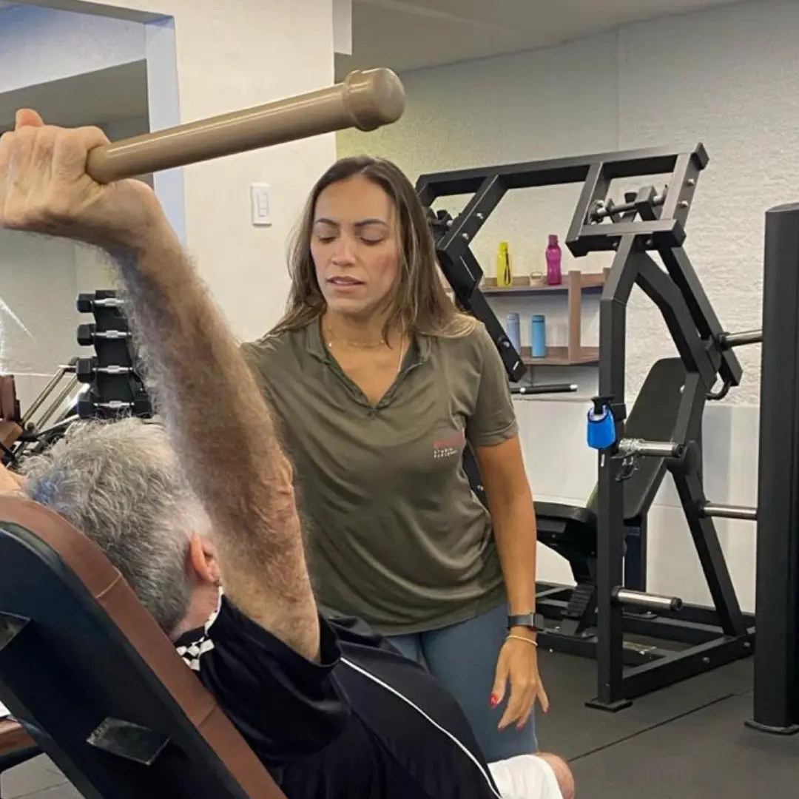

Viva seus melhores anos.
Com saúde e autonomia.
Treinamento personalizado e cuidado multidisciplinar
para uma vida com mais movimento.
Rua Prof. Dias da Rocha, 2103 Dionísio Torres, Fortaleza
personalizado
multidisciplinar
periódicas
contínuo
Cuidado em movimento,
feito pessoa por pessoa.
Um método pensado para sua saúde física, clínica
e emocional, com acompanhamento em cada etapa.

Um cuidado em seis movimentos.
- 01Mapear
- 02Avaliar
- 03Personalizar
- 04Acompanhar
- 05Reavaliar
- 06Evoluir
Uma nova forma
de cuidar da sua saúde.
Educadores físicos, fisioterapeuta e nutricionista trabalhando juntos, com atenção ao seu corpo, à sua rotina e aos seus objetivos.


Foco em você.
Em cada movimento.
Um profissional presente, treino personalizado e respeito ao seu ritmo. Cuidado próximo para quem quer envelhecer com saúde e autonomia.
real
e limitações
individual
AVALIAÇÕES E CUIDADO CONTÍNUO
Evolução que se
acompanha de perto.
Avaliar, ajustar e seguir com você.
Cada etapa tem um propósito.
- Mapeamento de qualidade de vida
- Reavaliação do treino a cada 2 meses
- Avaliação de força a cada 4 meses
- Avaliações com fisioterapeuta e nutricionista


Um espaço para cuidar de você.
E se sentir parte.
Saúde, bem-estar e acolhimento em Dionísio Torres, Fortaleza.
Quero visitar a EverylifePessoas que cuidam
de pessoas.
Mais do que orientar exercícios,
estar presente na sua jornada.
DEPOIMENTOS
Quem vive a Everylife
tem uma história para contar.
Assista às histórias de quem faz parte da Everylife.
Vamos tirar suas dúvidas?
Para quem é a Everylife?
Para quem busca saúde, autonomia e qualidade de vida por meio de treinamento personalizado e acompanhamento próximo. Converse com nossa equipe para conhecer a proposta e apresentar seus objetivos.
Como funciona o acompanhamento?
O cuidado inclui treinamento personalizado, avaliações periódicas e acompanhamento multidisciplinar, considerando suas necessidades e sua evolução.
Como agendar uma visita?
Fale com nossa equipe pelo WhatsApp (85) 99723-7204 ou pelo Instagram @everylifeoficial para combinar sua visita e agendar sua aula experimental no studio.